CODING AGENTS AS PIXEL WORLD MODELS
traex/DeepSeek-V4.1-Flash · 0042
点击播放 · 原生 RGB 像素
逐轮保存的候选
回放视频、检查图与代码变化。
每份候选均可单独播放。实际图片检查记录在下方工具轨迹中。
候选 01播放与检查图
点击播放 · 原生 RGB 像素

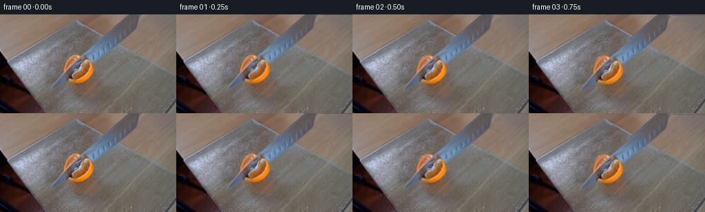
展开代码变化
--- 上一保存版本
+++ 本次保存版本
@@ -0,0 +1,192 @@
+from pathlib import Path
+
+import cv2
+import numpy as np
+from PIL import Image, ImageDraw
+
+from artifact_io import save
+
+
+CASE = Path(__file__).resolve().parent
+SOURCE = np.asarray(Image.open(CASE / "first_frame.png").convert("RGB"))
+H, W = SOURCE.shape[:2]
+
+# The visible blade silhouette is traced from the supplied frame.
+BLADE_POINTS = np.array(
+ [
+ (70, 115), (75, 101), (73, 94), (104, 61), (208, 0),
+ (256, 0), (256, 10), (190, 52), (124, 114), (111, 126),
+ ],
+ np.int32,
+)
+
+FRUIT_POINTS = np.array(
+ [
+ (106, 62), (117, 60), (126, 64), (133, 70), (137, 78),
+ (139, 87), (137, 96), (132, 103), (124, 109), (116, 113),
+ (108, 112), (100, 108), (95, 102), (92, 94), (92, 84),
+ (95, 75), (99, 68),
+ ],
+ np.int32,
+)
+
+
+def polygon_mask(points):
+ mask = np.zeros((H, W), np.uint8)
+ cv2.fillPoly(mask, [points], 255)
+ return mask
+
+
+def smoothstep(start, end, value):
+ t = np.clip((value - start) / (end - start), 0.0, 1.0)
+ return t * t * (3.0 - 2.0 * t)
+
+
+def affine_rgba(image, mask, dx, dy, angle=0.0, pivot=(115.0, 89.0)):
+ matrix = cv2.getRotationMatrix2D(pivot, angle, 1.0)
+ matrix[:, 2] += (dx, dy)
+ return cv2.warpAffine(
+ np.dstack([image, mask]),
+ matrix,
+ (W, H),
+ flags=cv2.INTER_LINEAR,
+ borderMode=cv2.BORDER_CONSTANT,
+ borderValue=(0, 0, 0, 0),
+ )
+
+
+def composite(base, rgba):
+ alpha = rgba[:, :, 3:4].astype(np.float32) / 255.0
+ return np.clip(
+ rgba[:, :, :3].astype(np.float32) * alpha
+ + base.astype(np.float32) * (1.0 - alpha),
+ 0,
+ 255,
+ ).astype(np.uint8)
+
+
+blade_mask = polygon_mask(BLADE_POINTS)
+fruit_mask = polygon_mask(FRUIT_POINTS)
+blade_fill = cv2.bitwise_and(blade_mask, fruit_mask)
+
+# Reconstruct the fruit under the blade by sampling nearby visible fruit pixels
+# across the cut. This keeps the exposed surface registered with the source.
+east_north = np.array([0.870, -0.491], np.float32)
+normal = np.array([0.491, 0.870], np.float32)
+center = np.array([117.0, 87.0], np.float32)
+reconstructed = SOURCE.astype(np.float32).copy()
+
+ys, xs = np.nonzero(blade_fill)
+for y, x in zip(ys, xs):
+ point = np.array([x, y], np.float32)
+ samples = []
+ weights = []
+ for direction in (-1.0, 1.0):
+ for distance in (4.0, 5.0, 6.0, 7.0, 8.0, 10.0):
+ probe = point + direction * distance * normal
+ px, py = int(round(probe[0])), int(round(probe[1]))
+ if (
+ 0 <= px < W
+ and 0 <= py < H
+ and fruit_mask[py, px]
+ and not blade_mask[py, px]
+ ):
+ samples.append(SOURCE[py, px].astype(np.float32))
+ weights.append(1.0 / distance)
+ break
+ if samples:
+ color = np.average(samples, axis=0, weights=weights)
+ else:
+ color = np.array([188, 106, 49], np.float32)
+
+ dx, dy = point - center
+ radius = float(np.hypot(dx, dy))
+ angle = float(np.arctan2(dy, dx))
+ stripe = abs(np.sin(angle * 5.0))
+ if radius < 22:
+ if stripe < 0.18:
+ color = 0.82 * color + 0.18 * np.array([224, 155, 74], np.float32)
+ elif stripe > 0.9:
+ color = 0.88 * color + 0.12 * np.array([176, 73, 16], np.float32)
+ if radius > 22:
+ color = 0.70 * color + 0.30 * np.array([218, 174, 116], np.float32)
+ reconstructed[y, x] = color
+
+base = np.clip(reconstructed, 0, 255).astype(np.uint8)
+outside_fruit = blade_mask.copy()
+outside_fruit[fruit_mask > 0] = 0
+base = cv2.inpaint(
+ cv2.cvtColor(base, cv2.COLOR_RGB2BGR),
+ outside_fruit,
+ 5,
+ cv2.INPAINT_TELEA,
+)
+base = cv2.cvtColor(base, cv2.COLOR_BGR2RGB)
+base[blade_mask == 0] = SOURCE[blade_mask == 0]
+
+# Soft source alpha prevents a one-pixel edge from appearing as the blade moves.
+blade_alpha = cv2.GaussianBlur(blade_mask, (3, 3), 0.55)
+blade_alpha = np.minimum(blade_alpha, blade_mask)
+blade_alpha[blade_mask > 0] = np.maximum(blade_alpha[blade_mask > 0], 80)
+
+
+def render(index):
+ if index == 0:
+ return SOURCE.copy()
+
+ # Downstroke through the fruit, brief hold, then clean withdrawal.
+ press = float(smoothstep(0.0, 7.5, index))
+ withdraw = float(smoothstep(10.0, 16.0, index))
+ openness = float(smoothstep(8.0, 17.0, index))
+
+ blade_dx = 3.2 * press - 2.0 * withdraw
+ blade_dy = 5.0 * press - 9.0 * withdraw
+ blade_angle = -1.1 * withdraw
+ blade = affine_rgba(
+ SOURCE,
+ blade_alpha,
+ blade_dx,
+ blade_dy,
+ blade_angle,
+ (207.0, 12.0),
+ )
+
+ frame = base.copy()
+
+ # A narrow, dark cut becomes visible as the blade clears it.
+ if withdraw > 0.01:
+ overlay = Image.fromarray(np.dstack([frame, np.full((H, W), 255, np.uint8)]))
+ draw = ImageDraw.Draw(overlay, "RGBA")
+ for x in range(96, 139):
+ y = 172.0 - 0.80 * x
+ strength = int(72 * withdraw)
+ draw.point((x, int(round(y))), fill=(101, 49, 22, strength))
+ draw.point((x, int(round(y + 1))), fill=(177, 96, 31, int(55 * withdraw)))
+ frame = np.asarray(overlay.convert("RGB"))
+
+ frame = composite(frame, blade)
+
+ # Juice gathers at the lower end of the cut after the blade withdraws.
+ if openness > 0.03:
+ overlay = Image.fromarray(np.dstack([frame, np.full((H, W), 255, np.uint8)]))
+ draw = ImageDraw.Draw(overlay, "RGBA")
+ droplets = [
+ (123.0, 108.0, 1.8, 0.95),
+ (130.0, 105.0, 1.1, 0.75),
+ (116.5, 112.0, 0.8, 0.55),
+ ]
+ for x, y, radius, strength in droplets:
+ r = int(round(radius))
+ alpha = int(210 * openness * strength)
+ draw.ellipse((x - r, y - r, x + r, y + r), fill=(216, 105, 12, alpha))
+ if r >= 1:
+ draw.point((int(x - 1), int(y - 1)), fill=(255, 201, 98, min(255, alpha + 30)))
+ frame = np.asarray(overlay.convert("RGB"))
+
+ return frame
+
+
+frames = np.stack([render(index) for index in range(20)]).astype(np.uint8)
+assert frames.shape == (20, 144, 256, 3)
+assert np.array_equal(frames[0], SOURCE)
+save(frames, CASE)
候选 02播放与检查图
点击播放 · 原生 RGB 像素

展开代码变化
--- 上一保存版本
+++ 本次保存版本
@@ -143,7 +143,7 @@
blade_dy = 5.0 * press - 9.0 * withdraw
blade_angle = -1.1 * withdraw
blade = affine_rgba(
- SOURCE,
+ base,
blade_alpha,
blade_dx,
blade_dy,
候选 03播放与检查图
点击播放 · 原生 RGB 像素

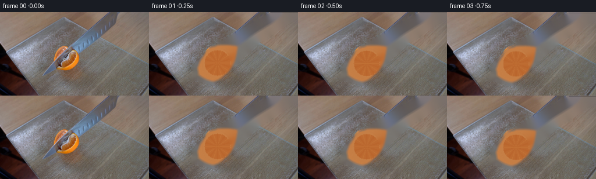
展开代码变化
--- 上一保存版本
+++ 本次保存版本
@@ -159,9 +159,11 @@
draw = ImageDraw.Draw(overlay, "RGBA")
for x in range(96, 139):
y = 172.0 - 0.80 * x
- strength = int(72 * withdraw)
- draw.point((x, int(round(y))), fill=(101, 49, 22, strength))
- draw.point((x, int(round(y + 1))), fill=(177, 96, 31, int(55 * withdraw)))
+ if not fruit_mask[int(round(y)), x]:
+ continue
+ strength = int(110 * withdraw)
+ draw.point((x, int(round(y))), fill=(102, 45, 17, strength))
+ draw.point((x, int(round(y + 1))), fill=(190, 102, 27, int(90 * withdraw)))
frame = np.asarray(overlay.convert("RGB"))
frame = composite(frame, blade)
@@ -171,9 +173,9 @@
overlay = Image.fromarray(np.dstack([frame, np.full((H, W), 255, np.uint8)]))
draw = ImageDraw.Draw(overlay, "RGBA")
droplets = [
- (123.0, 108.0, 1.8, 0.95),
- (130.0, 105.0, 1.1, 0.75),
- (116.5, 112.0, 0.8, 0.55),
+ (125.0, 106.0, 1.7, 0.95),
+ (132.0, 102.0, 1.1, 0.75),
+ (119.0, 110.0, 0.8, 0.55),
]
for x, y, radius, strength in droplets:
r = int(round(radius))
候选 04播放与检查图
可观测工具轨迹
实际执行的命令与返回图片。
命令 1exit 0
/bin/bash -c "pwd && rg --files -g '"'!**/.git/**'"' | sed -n '1,200p'"
命令 2exit 0
/bin/bash -c "sed -n '1,240p' prompt.txt"
命令 3exit 0
/bin/bash -c "sed -n '1,280p' GENERATION_RULES.md"
命令 4exit 0
/bin/bash -c 'git status --short && file first_frame.png && identify first_frame.png 2>/dev/null || true'
命令 5exit 0
/bin/bash -c "sed -n '1,260p' artifact_io.py"
命令 6exit 0
/bin/bash -c "sed -n '1,300p' player_template.html"
命令 7exit 0
/bin/bash -c "which ffmpeg || true; which convert || true; which magick || true; python - <<'PY'
import cv2, PIL, numpy
print('cv2',cv2.__version__,'PIL',PIL.__version__,'numpy',numpy.__version__)
PY"命令 8exit 0
/bin/bash -c "python - <<'PY'
from PIL import Image
import numpy as np
im=Image.open('first_frame.png')
print(im.mode, im.size)
a=np.asarray(im)
print(a.shape,a.dtype,a.min(),a.max())
print('unique',len(np.unique(a.reshape(-1,3),axis=0)))
PY"命令 9exit 0
/bin/bash -c "python - <<'PY'
from PIL import Image
im=Image.open('first_frame.png')
im.resize((1024,576),Image.Resampling.NEAREST).save('.tmp/first_x4.png')
PY"命令 10exit 0
/bin/bash -c "python - <<'PY' for m in ['scipy','skimage']: try: x=__import__(m); print(m, getattr(x,'__version__','ok')) except Exception as e: print(m,e) PY"
命令 11exit 0
/bin/bash -c "python - <<'PY'
from PIL import Image
im=Image.open('first_frame.png')
im.crop((60,35,160,120)).resize((800,680),Image.Resampling.NEAREST).save('.tmp/fruit_x8.png')
PY"命令 12exit 0
/bin/bash -c "python - <<'PY'
from PIL import Image
import numpy as np, cv2
im=np.asarray(Image.open('first_frame.png'))
hsv=cv2.cvtColor(im,cv2.COLOR_RGB2HSV)
for name,mask in {
'gray': (hsv[:,:,1]<45)&(hsv[:,:,2]>75),
'brightgray': (hsv[:,:,1]<30)&(hsv[:,:,2]>110),
'lowSat': hsv[:,:,1]<60,
}.items():
out=np.zeros_like(im); out[mask]=im[mask]
Image.fromarray(out).save('.tmp/'+name+'.png')
Image.fromarray((mask*255).astype('uint8')).save('.tmp/'+name+'_mask.png')
print(name, mask.sum())
PY"命令 13exit 0
/bin/bash -c "python - <<'PY'
from PIL import Image
import numpy as np, cv2
im=np.asarray(Image.open('first_frame.png'))
hsv=cv2.cvtColor(im,cv2.COLOR_RGB2HSV)
mask=(hsv[:,:,1]<38)&(hsv[:,:,2]>80)
# crop blade only approximate polygon
poly=np.zeros(mask.shape,np.uint8)
pts=np.array([[68,108],[76,99],[75,93],[104,64],[213,0],[226,0],[225,13],[188,49],[123,107],[112,119]],np.int32)
cv2.fillPoly(poly,[pts],1)
mask=(mask&poly.astype(bool))
out=np.zeros_like(im);out[mask]=im[mask]
Image.fromarray(out).save('.tmp/blade_masked.png')
Image.fromarray((mask*255).astype('uint8')).save('.tmp/blade_mask.png')
print(mask.sum())
PY"命令 14exit 0
/bin/bash -c "python - <<'PY'
from PIL import Image
import numpy as np, cv2
im=np.asarray(Image.open('first_frame.png'))
hsv=cv2.cvtColor(im,cv2.COLOR_RGB2HSV)
mask=(hsv[:,:,1]<42)&(hsv[:,:,2]>65)
# limits: knife lies on two edges (roughly), and has bright low-saturation body.
poly=np.zeros(mask.shape,np.uint8)
pts=np.array([[64,115],[75,101],[72,94],[105,61],[209,0],[255,0],[255,9],[184,54],[119,115],[108,127]],np.int32)
cv2.fillPoly(poly,[pts],1)
mask &= poly.astype(bool)
# clean component containing center blade
num,labels,stats,cents=cv2.connectedComponentsWithStats(mask.astype('uint8'),8)
print([(i,stats[i].tolist()) for i in range(1,num)])
# print unique regions perhaps
out=im.copy();out[~mask]=0
Image.fromarray(out).save('.tmp/blade_masked2.png')
Image.fromarray((mask*255).astype('uint8')).save('.tmp/blade_mask2.png')
PY"命令 15exit 0
/bin/bash -c "python - <<'PY'
from PIL import Image
import numpy as np, cv2
im=np.asarray(Image.open('first_frame.png'))
hsv=cv2.cvtColor(im,cv2.COLOR_RGB2HSV)
mask=(hsv[:,:,1]<45)&(hsv[:,:,2]>65)
# define blade polygon more carefully based on visible edges
pts=np.array([[64,115],[74,101],[73,94],[104,61],[208,0],[254,0],[254,9],[184,54],[119,115],[108,127]],np.int32)
poly=np.zeros(mask.shape,np.uint8);cv2.fillPoly(poly,[pts],1);mask &= poly.astype(bool)
num,labels,stats,cents=cv2.connectedComponentsWithStats(mask.astype('uint8'),8)
# combine components size>10 in blade region
keep=np.zeros_like(mask)
for i in range(1,num):
if stats[i,cv2.CC_STAT_AREA]>10: keep |= labels==i
mask=keep
out=im.copy();out[~mask]=0
Image.fromarray(out).save('.tmp/blade_masked3.png')
Image.fromarray((mask*255).astype('uint8')).save('.tmp/blade_mask3.png')
print('sum',mask.sum(),'components',[(stats[i].tolist()) for i in range(1,num) if stats[i,4]>10])
PY"命令 16exit 0
/bin/bash -c "python - <<'PY'
from PIL import Image, ImageDraw
im=Image.open('first_frame.png').resize((1024,576),Image.Resampling.NEAREST)
d=ImageDraw.Draw(im)
for x in range(0,257,10):
X=x*4; d.line((X,0,X,576),fill=(255,0,255),width=1)
if x%20==0: d.text((X+2,2),str(x),fill=(255,0,255))
for y in range(0,145,10):
Y=y*4; d.line((0,Y,1024,Y),fill=(255,0,255),width=1)
if y%20==0: d.text((2,Y+2),str(y),fill=(255,0,255))
im.save('.tmp/grid.png')
PY"命令 17exit 0
/bin/bash -c "python - <<'PY'
from PIL import Image
im=Image.open('first_frame.png')
im.crop((55,0,256,135)).resize((1005,675),Image.Resampling.NEAREST).save('.tmp/knife_x5.png')
PY"命令 18exit 0
/bin/bash -c "python - <<'PY'
from PIL import Image,ImageDraw
crop=(55,0,256,130); scale=6
im=Image.open('first_frame.png').crop(crop).resize(((crop[2]-crop[0])*scale,(crop[3]-crop[1])*scale),Image.Resampling.NEAREST)
d=ImageDraw.Draw(im)
for x in range(60,257,5):
X=(x-crop[0])*scale;d.line((X,0,X,im.height),fill=(255,0,255),width=1)
if x%10==0:d.text((X+2,2),str(x),fill=(255,0,255))
for y in range(0,131,5):
Y=(y-crop[1])*scale;d.line((0,Y,im.width,Y),fill=(255,0,255),width=1)
if y%10==0:d.text((2,Y+2),str(y),fill=(255,0,255))
im.save('.tmp/knife_grid.png')
PY"命令 19exit 0
/bin/bash -c "python - <<'PY'
import numpy as np, cv2
from PIL import Image
im=np.asarray(Image.open('first_frame.png'))
# orange+fruit ellipse approx x93..137 y63..113
Y,X=np.ogrid[:144,:256]
# print colors at samples
for x,y in [(92,78),(100,70),(105,105),(125,68),(136,85),(115,96),(115,84),(90,100),(70,110),(150,120),(200,120),(40,90)]:
print((x,y),im[y,x])
PY"命令 20exit 0
/bin/bash -c "python - <<'PY'
from PIL import Image
import numpy as np, cv2
im=np.asarray(Image.open('first_frame.png'))
# create orange detection map based on HSV
hsv=cv2.cvtColor(im,cv2.COLOR_RGB2HSV)
mask=((hsv[:,:,0]<25)&(hsv[:,:,0]>2)&(hsv[:,:,1]>90)&(hsv[:,:,2]>55)).astype(np.uint8)
# close/open
mask=cv2.morphologyEx(mask,cv2.MORPH_CLOSE,np.ones((3,3),np.uint8))
mask=cv2.morphologyEx(mask,cv2.MORPH_OPEN,np.ones((3,3),np.uint8))
out=np.zeros_like(im);out[mask.astype(bool)]=im[mask.astype(bool)]
Image.fromarray(out).save('.tmp/orange.png')
Image.fromarray((mask*255)).save('.tmp/orange_mask.png')
num,l,st,c=cv2.connectedComponentsWithStats(mask,8)
print([(st[i].tolist()) for i in range(1,num) if st[i,4]>10])
PY"命令 21exit 0
/bin/bash -c "python - <<'PY'
import cv2, numpy as np
from PIL import Image
im=np.asarray(Image.open('first_frame.png'))
# estimate board background using inpainting fruit/knife region
mask=np.zeros(im.shape[:2],np.uint8)
pts=np.array([[75,45],[146,45],[151,124],[67,124]],np.int32);cv2.fillPoly(mask,[pts],255)
b=cv2.inpaint(cv2.cvtColor(im,cv2.COLOR_RGB2BGR),mask,5,cv2.INPAINT_TELEA)
Image.fromarray(cv2.cvtColor(b,cv2.COLOR_BGR2RGB)).save('.tmp/board_inpaint.png')
PY"命令 22exit 0
/bin/bash -c "python - <<'PY'
from PIL import Image
im=Image.open('first_frame.png')
im.crop((75,50,150,125)).resize((750,750),Image.Resampling.LANCZOS).save('.tmp/fruit_lanczos.png')
PY"命令 23exit 0
/bin/bash -c 'python .tmp/draft_gen.py'
命令 24exit 0
/bin/bash -c "python - <<'PY'
from PIL import Image
import numpy as np
im=np.asarray(Image.open('first_frame.png'))
g=im.mean(2)
for y in [0,5,10,15,20,30,40,50,60,70,80,90,95,100,105,110,115,120,125]:
vals=np.where(g[y]>120)[0]
# contiguous runs
runs=[]
if len(vals):
cuts=np.where(np.diff(vals)>1)[0]
for a,b in zip(np.r_[0,cuts+1],np.r_[cuts+1,len(vals)]): runs.append((int(vals[a]),int(vals[b-1])))
print(y,runs)
PY"命令 25exit 0
/bin/bash -c "python - <<'PY'
from PIL import Image
import numpy as np, cv2
im=np.asarray(Image.open('first_frame.png'))
# draw exact proposed knife mask and boundary overlay
pts=np.array([[214,0],[256,0],[256,10],[190,52],[124,114],[111,126],[70,115],[75,101],[73,94],[104,61],[208,0]],np.int32)
out=im.copy(); cv2.polylines(out,[pts],True,(255,0,255),1)
Image.fromarray(out).resize((1024,576),Image.Resampling.NEAREST).save('.tmp/knife_overlay.png')
PY"命令 26exit 0
/bin/bash -c "python - <<'PY'
from PIL import Image
import numpy as np
im=np.asarray(Image.open('first_frame.png'))
# Print 2x2 avg colors in fruit approximate grid
for y in range(65,111,5):
print('y',y, [(x, im[max(0,y-1):y+2,max(0,x-1):x+2].mean((0,1)).round().astype(int).tolist()) for x in range(95,137,5)])
PY"命令 27exit 0
/bin/bash -c "python - <<'PY'
from PIL import Image
import numpy as np, cv2
im=np.asarray(Image.open('first_frame.png'))
hsv=cv2.cvtColor(im,cv2.COLOR_RGB2HSV)
# create very selective yellow-orange and red orange pixels
sel=((hsv[:,:,0]>=2)&(hsv[:,:,0]<=30)&(hsv[:,:,1]>80)&(hsv[:,:,2]>60))
out=np.zeros_like(im);out[sel]=im[sel]
Image.fromarray(out).resize((1024,576),Image.Resampling.NEAREST).save('.tmp/fruit_colors.png')
PY"命令 28exit 0
/bin/bash -c "python - <<'PY'
from PIL import Image
import numpy as np
im=np.asarray(Image.open('first_frame.png'))
# inspect likely fruit color ranges based on visible orange pixels
sel=(im[:,:,0]>130)&(im[:,:,0]>im[:,:,1]*1.25)&(im[:,:,1]>40)
out=np.zeros_like(im);out[sel]=im[sel]
Image.fromarray(out).resize((1024,576),Image.Resampling.NEAREST).save('.tmp/fruit_rgb.png')
PY"命令 29exit 0
/bin/bash -c "python - <<'PY'
from PIL import Image
im=Image.open('.tmp/board_inpaint.png').resize((1024,576),Image.Resampling.NEAREST)
im.save('.tmp/board_x4.png')
PY"命令 30exit 0
/bin/bash -c "python - <<'PY'
from PIL import Image
import numpy as np, cv2
im=np.asarray(Image.open('first_frame.png'))
# Use GrabCut initialization to estimate fruit and knife masks; only for analysis.
mask=np.zeros(im.shape[:2],np.uint8)
mask[55:118,85:145]=3
mask[55:118,85:145][0:5]=0
# seed outside fruit knife region as sure bg
mask[0:45,:]=0; mask[120:,:]=0; mask[:,0:60]=0; mask[:,150:]=0
mask[60:110,90:140]=2
bgd=np.zeros((1,65),np.float64);fgd=np.zeros((1,65),np.float64)
try:
cv2.grabCut(im,mask,None,bgd,fgd,3,cv2.GC_INIT_WITH_MASK)
out=np.where(((mask==1)|(mask==3))[...,None],im,0)
Image.fromarray(out).save('.tmp/grabcut.png')
except Exception as e: print(e)
PY"命令 31exit 0
/bin/bash -c "python - <<'PY'
from PIL import Image
im=Image.open('first_frame.png')
# enlarge selected regions with labels by just saving crop
im.crop((88,55,145,120)).resize((456,520),Image.Resampling.NEAREST).save('.tmp/fruit_only.png')
PY"命令 32exit 0
/bin/bash -c "python - <<'PY'
from PIL import Image
import numpy as np
im=np.asarray(Image.open('first_frame.png'))
# output each color channel and saturation to inspect silhouette
for i,name in enumerate(['r','g','b']): Image.fromarray(im[:,:,i]).save('.tmp/'+name+'.png')
PY"命令 33exit 1
/bin/bash -c "python - <<'PY'
# quick import draft module triggers full render; instead execute pieces and save fruit clean crop
exec(open('.tmp/draft_gen.py').read().split('def render')[0])
from PIL import Image
Image.fromarray(fruit_clean).crop((70,50,150,125)).resize((800,750),Image.Resampling.NEAREST).save('.tmp/fruit_clean_x10.png')
Image.fromarray(board).crop((70,50,150,125)).resize((800,750),Image.Resampling.NEAREST).save('.tmp/board_crop.png')
PY"命令 34exit 0
/bin/bash -c "python - <<'PY'
s=open('.tmp/draft_gen.py').read().replace('Path(__file__).resolve().parents[1]','Path.cwd()')
exec(s.split('def render')[0])
from PIL import Image
Image.fromarray(fruit_clean).crop((70,50,150,125)).resize((800,750),Image.Resampling.NEAREST).save('.tmp/fruit_clean_x10.png')
Image.fromarray(board).crop((70,50,150,125)).resize((800,750),Image.Resampling.NEAREST).save('.tmp/board_crop.png')
PY"命令 35exit 0
/bin/bash -c "python - <<'PY'
from PIL import Image,ImageDraw
im=Image.open('first_frame.png').crop((88,55,145,120)).resize((570,650),Image.Resampling.NEAREST)
d=ImageDraw.Draw(im)
for x in range(90,146,2):
X=(x-88)*10;d.line((X,0,X,650),fill=(255,0,255),width=1)
if x%10==0:d.text((X+2,2),str(x),fill=(255,0,255))
for y in range(56,121,2):
Y=(y-55)*10;d.line((0,Y,570,Y),fill=(255,0,255),width=1)
if y%10==0:d.text((2,Y+2),str(y),fill=(255,0,255))
im.save('.tmp/fruit_grid2.png')
PY"命令 36exit 0
/bin/bash -c "python - <<'PY'
from PIL import Image
import numpy as np, cv2
im=np.asarray(Image.open('first_frame.png'))
# Make a segmentation proposal: color distance to orange/red/yellow and rough fruit ellipse
Y,X=np.mgrid[:144,:256]
ell=(((X-116)/24.0)**2+((Y-89)/27.0)**2<1.08)
# orange-like via rgb dominance
orange=(im[:,:,0].astype(int)-im[:,:,2]>18)&(im[:,:,0].astype(int)-im[:,:,1]>10)&(im[:,:,0]>90)
# combine, fill holes around fruit
mask=(ell & (orange|cv2.dilate(orange.astype(np.uint8),np.ones((7,7),np.uint8)).astype(bool))).astype(np.uint8)
mask=cv2.morphologyEx(mask,cv2.MORPH_CLOSE,np.ones((5,5),np.uint8))
# clip bottom/top manually
mask[:61]=0;mask[115:]=0
out=np.zeros_like(im);out[mask.astype(bool)]=im[mask.astype(bool)]
Image.fromarray(out).save('.tmp/fruit_seg.png')
Image.fromarray((mask*255)).save('.tmp/fruit_seg_mask.png')
PY"命令 37exit 0
/bin/bash -c "python - <<'PY'
from PIL import Image
import numpy as np
im=np.asarray(Image.open('first_frame.png'))
# print RGB for each row x 100..140 in compact chars categories
chars=' .:-=+*#%@'
for y in range(60,116,2):
s=''
for x in range(90,146,2):
r,g,b=im[y,x]
if max(r,g,b)<65:s+=' '
elif r>g*1.35 and r>b*1.25:s+='O'
elif r>g*1.15 and g>b*1.15:s+='o'
elif abs(int(r)-int(g))<18 and abs(int(g)-int(b))<18:s+='K' if r>110 else 'k'
else:s+='.'
s+=s[-1]
print(f'{y:3d}',s)
PY"命令 38exit 0
/bin/bash -c "python - <<'PY'
import numpy as np, cv2
from PIL import Image
im=np.asarray(Image.open('first_frame.png'))
hsv=cv2.cvtColor(im,cv2.COLOR_RGB2HSV)
# assess HSV at a known orange center and red edge
for p in [(125,90),(130,85),(115,95),(120,95),(110,100),(100,75),(130,75),(120,65),(105,70),(135,90)]:
x,y=p;print(p,im[y,x],hsv[y,x])
PY"命令 39exit 0
/bin/bash -c "python - <<'PY'
from PIL import Image
import numpy as np, cv2
im=np.asarray(Image.open('first_frame.png'))
hsv=cv2.cvtColor(im,cv2.COLOR_RGB2HSV)
mask=((hsv[:,:,0]>=3)&(hsv[:,:,0]<=30)&(hsv[:,:,1]>=70)&(hsv[:,:,2]>=60)).astype(np.uint8)
mask[:60]=0;mask[115:]=0;mask[:,:90]=0;mask[:,142:]=0
# keep all, then close
mask=cv2.morphologyEx(mask,cv2.MORPH_CLOSE,np.ones((3,3),np.uint8))
out=np.zeros_like(im);out[mask.astype(bool)]=im[mask.astype(bool)]
Image.fromarray(out).resize((1024,576),Image.Resampling.NEAREST).save('.tmp/fruit_hsv30.png')
PY"命令 40exit 0
/bin/bash -c "python - <<'PY'
from PIL import Image
import numpy as np, cv2
im=np.asarray(Image.open('first_frame.png'))
pts=np.array([[72,99],[75,92],[104,61],[208,0],[256,0],[256,10],[190,52],[75,102]],np.int32)
out=im.copy();cv2.polylines(out,[pts],True,(255,0,255),1)
Image.fromarray(out).resize((1024,576),Image.Resampling.NEAREST).save('.tmp/knife_overlay2.png')
PY"命令 41exit 0
/bin/bash -c "python - <<'PY'
s=open('.tmp/draft_gen.py').read().replace('Path(__file__).resolve().parents[1]','Path.cwd()')
exec(s.split('def render')[0])
import cv2
out=IMAGE.copy(); cv2.polylines(out,[np.array(FRUIT_POINTS,np.int32)],True,(255,0,255),1)
Image.fromarray(out).resize((1024,576),Image.Resampling.NEAREST).save('.tmp/fruit_overlay.png')
PY"命令 42exit 0
/bin/bash -c "python - <<'PY'
from PIL import Image
import numpy as np
im=np.asarray(Image.open('first_frame.png'))
for y in [60,62,64,66,68,70,72,74,76,78,80,82,84,86,88,90,92,94,96,98,100,102,104,106,108,110,112,114,116]:
s=''
for x in range(86,148):
r,g,b=im[y,x].astype(int)
# category: O=strong orange/red, o=weaker warm, K=neutral bright, k=neutral dark, .=dark background, _=gray board
if r>g*1.45 and r>b*1.7 and r>125: ch='O'
elif r>g*1.18 and r>b*1.25 and r>95: ch='o'
elif max(r,g,b)<55:ch='.'
elif abs(r-g)<14 and abs(g-b)<14: ch='K' if r>115 else 'k'
else:ch='-'
s+=ch
print(f'{y:3d} {s}')
PY"命令 43exit 0
/bin/bash -c "python - <<'PY'
import cv2, numpy as np
from PIL import Image
im=np.asarray(Image.open('first_frame.png'))
g=cv2.cvtColor(im,cv2.COLOR_RGB2GRAY)
e=cv2.Canny(g,40,100)
lines=cv2.HoughLinesP(e,1,np.pi/180,threshold=20,minLineLength=30,maxLineGap=6)
for l in sorted(lines[:,0].tolist(), key=lambda q: -((q[2]-q[0])**2+(q[3]-q[1])**2))[:25]:
print(l)
PY"命令 44exit 0
/bin/bash -c "python - <<'PY'
import numpy as np, cv2
from PIL import Image
im=np.asarray(Image.open('first_frame.png'))
# threshold blade interior + edge manually and save at large scale with no interpolation
mask=np.zeros(im.shape[:2],np.uint8)
poly=np.array([[104,61],[208,0],[256,0],[256,10],[190,52],[75,102],[74,94]],np.int32)
cv2.fillPoly(mask,[poly],255)
out=im.copy();out[mask==0]=0
Image.fromarray(out).save('.tmp/blade_roi.png')
PY"视觉工具实际返回图片 1

视觉工具实际返回图片 2
视觉工具实际返回图片 3
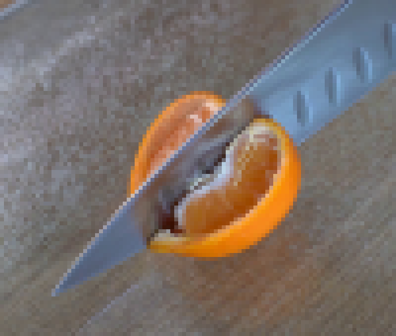
视觉工具实际返回图片 4
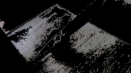
视觉工具实际返回图片 5
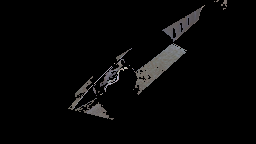
视觉工具实际返回图片 6
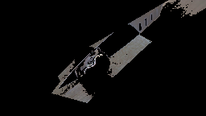
视觉工具实际返回图片 7
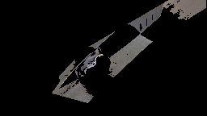
视觉工具实际返回图片 8
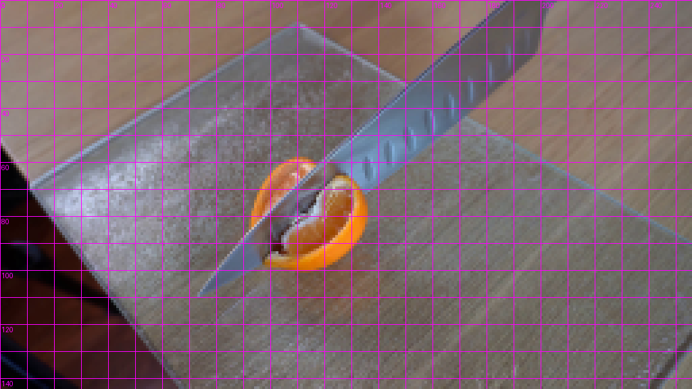
视觉工具实际返回图片 9
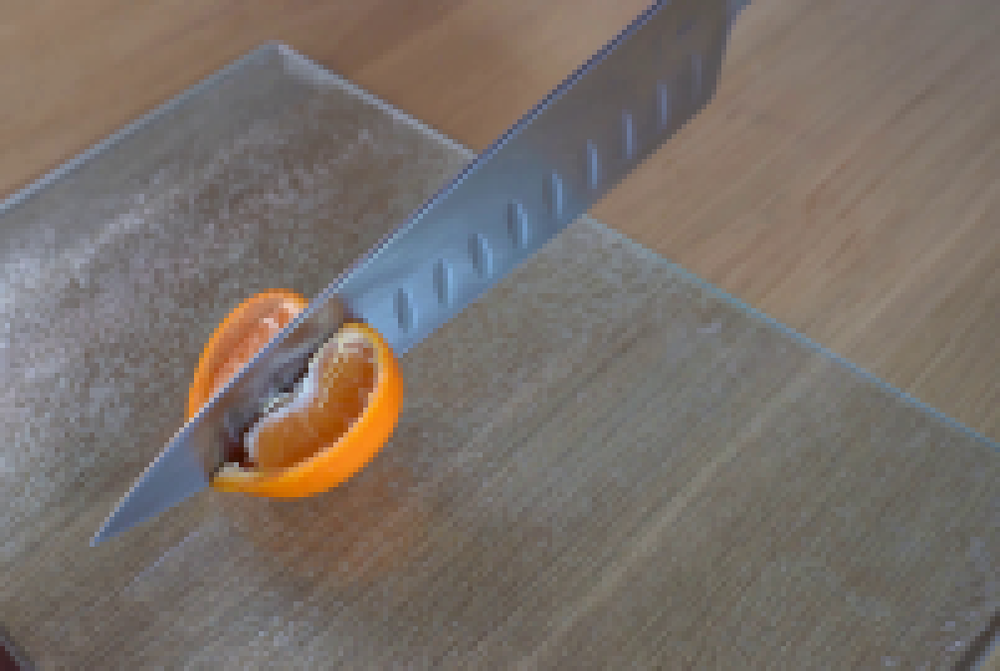
视觉工具实际返回图片 10
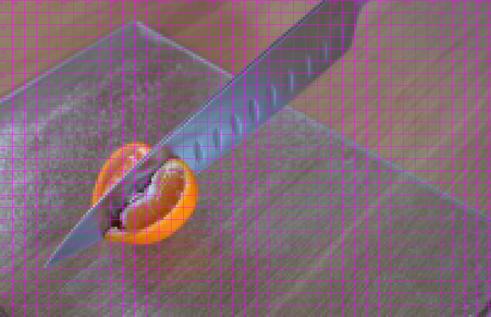
视觉工具实际返回图片 11
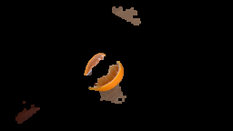
视觉工具实际返回图片 12
视觉工具实际返回图片 13
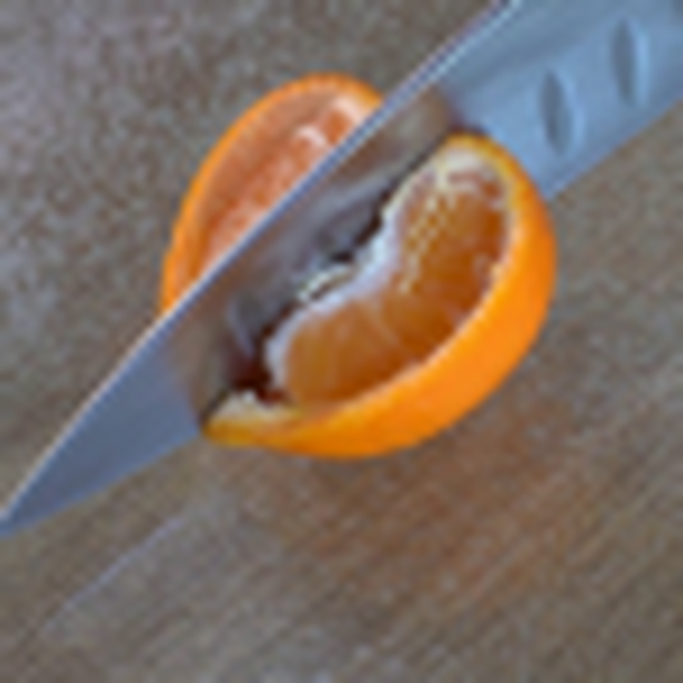
视觉工具实际返回图片 14
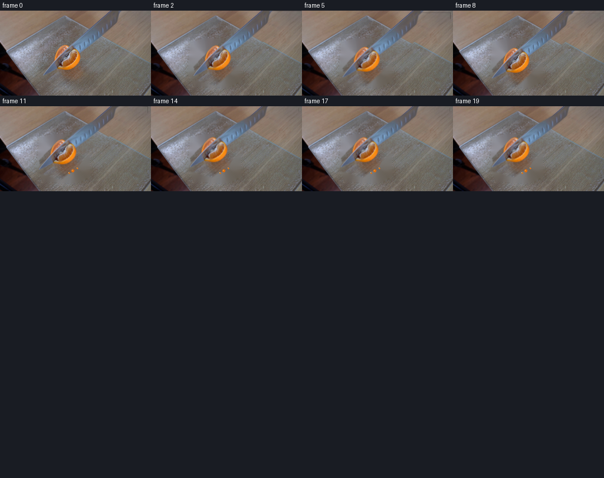
视觉工具实际返回图片 15
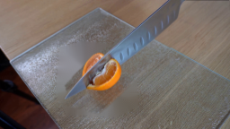
视觉工具实际返回图片 16
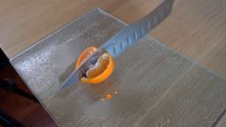
视觉工具实际返回图片 17
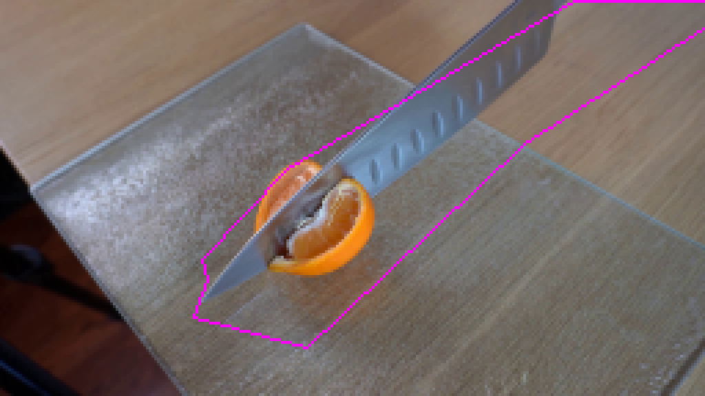
视觉工具实际返回图片 18
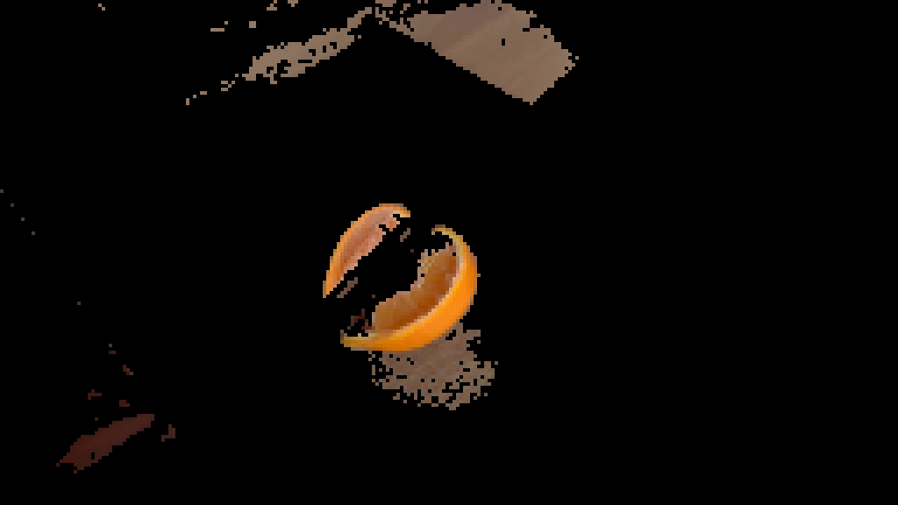
视觉工具实际返回图片 19
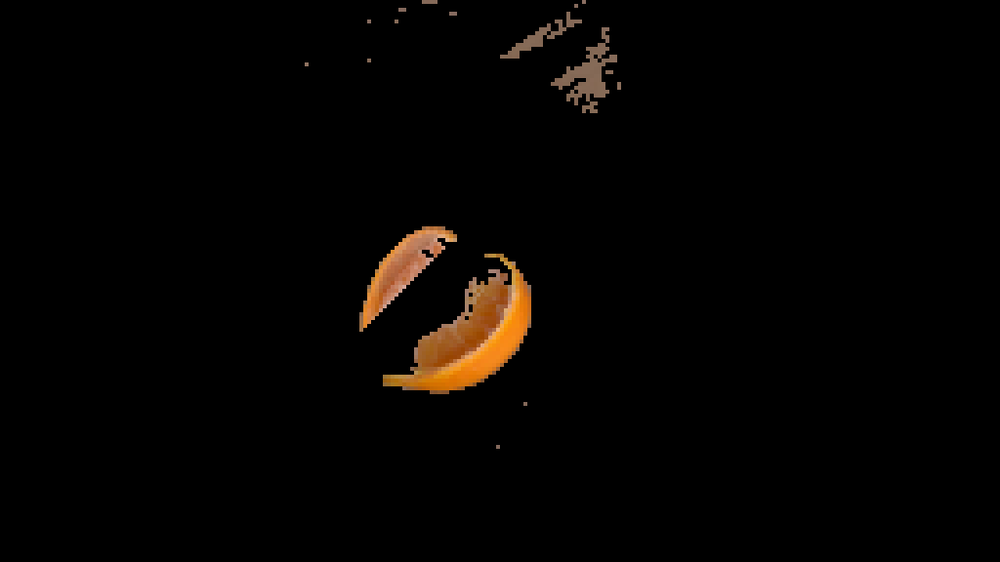
视觉工具实际返回图片 20
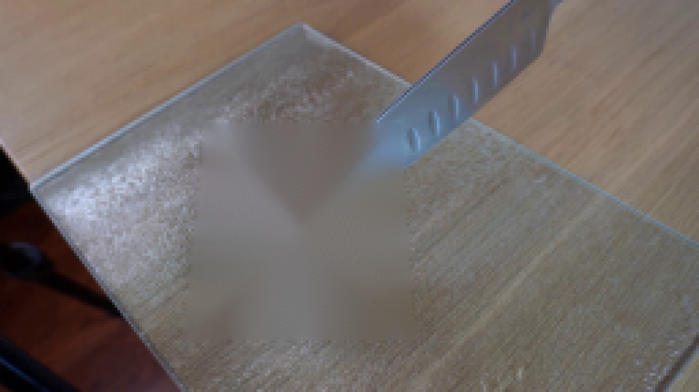
视觉工具实际返回图片 21
视觉工具实际返回图片 22
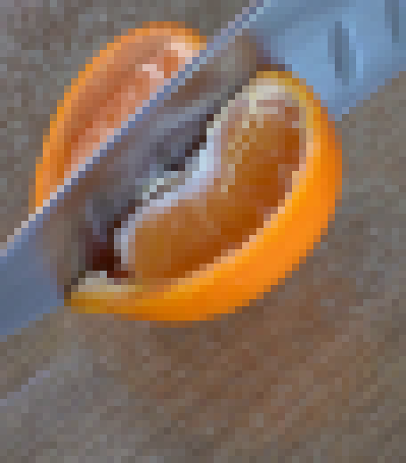
视觉工具实际返回图片 23
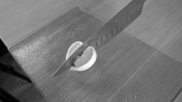
视觉工具实际返回图片 24
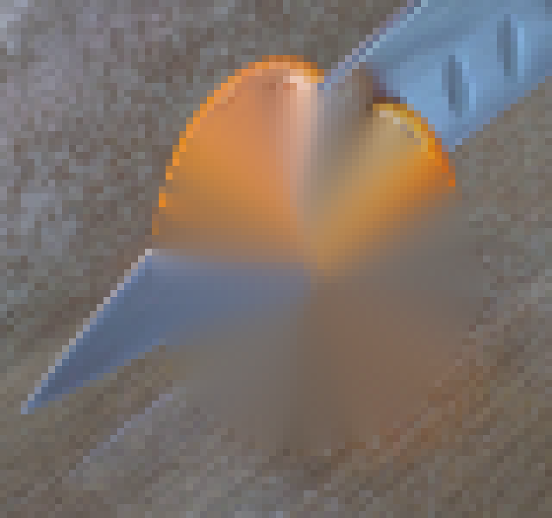
视觉工具实际返回图片 25
视觉工具实际返回图片 26
视觉工具实际返回图片 27
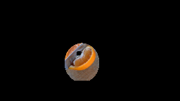
视觉工具实际返回图片 28
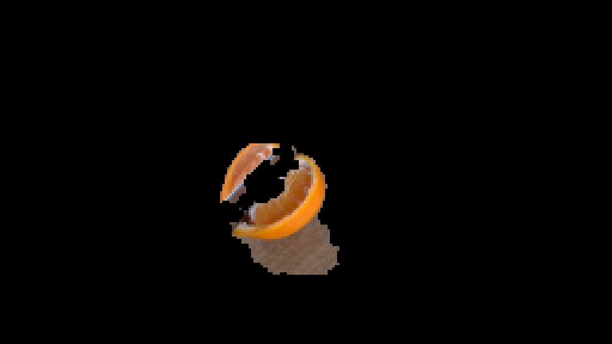
视觉工具实际返回图片 29
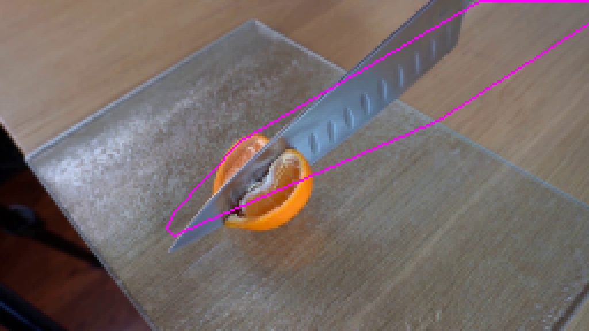
视觉工具实际返回图片 30
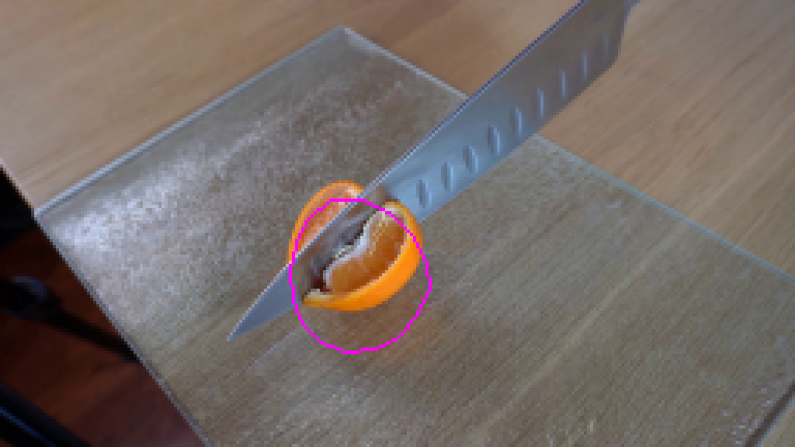
命令 45exit 0
/bin/bash -c "ls -la .tmp | sed -n '1,200p'"
命令 46exit 0
/bin/bash -c "ls -la && find . -maxdepth 2 -name 'task_spec.json' -print"
命令 47exit 0
/bin/bash -c "python - <<'PY'
from PIL import Image
import numpy as np
im=np.asarray(Image.open('first_frame.png'))
print(im.shape)
PY"命令 48exit 0
/bin/bash -c 'python .tmp/base_experiment.py'
命令 49exit 0
/bin/bash -c 'python .tmp/fill_experiment.py'
命令 50exit 0
/bin/bash -c "python - <<'PY'
from PIL import Image
import numpy as np
im=np.asarray(Image.open('.tmp/filled_base.png'))
for y in range(60,112,3):
print(y, [im[y,x].tolist() for x in [96,100,105,110,115,120,125,130,135]])
PY"命令 51exit 0
/bin/bash -c 'python .tmp/fill_experiment.py'
命令 52exit 0
/bin/bash -c "python - <<'PY'
from PIL import Image
import numpy as np, cv2
im=np.asarray(Image.open('first_frame.png'))
# extract ROI and list coordinates where strong orange
hsv=cv2.cvtColor(im,cv2.COLOR_RGB2HSV)
mask=(hsv[:,:,1]>170)&(hsv[:,:,0]>5)&(hsv[:,:,0]<25)&(hsv[:,:,2]>150)
Image.fromarray((mask*255).astype('uint8')).save('.tmp/strong_orange.png')
PY"命令 53exit 0
/bin/bash -c "python - <<'PY'
import numpy as np, cv2
from PIL import Image
im=np.asarray(Image.open('first_frame.png'))
# print hue/sat coordinate grid
hsv=cv2.cvtColor(im,cv2.COLOR_RGB2HSV)
for y in range(60,112,4):
vals=[]
for x in range(94,138,4):
h,s,v=hsv[y,x]; vals.append(f'{x}:{h:02d}/{s:03d}')
print(y,' '.join(vals))
PY"命令 54exit 0
/bin/bash -c 'python .tmp/fill_experiment.py'
命令 55exit 0
/bin/bash -c 'python .tmp/fill_experiment.py'
命令 56exit 0
/bin/bash -c "python - <<'PY'
from PIL import Image
im=Image.open('.tmp/filled_base.png')
im.crop((90,55,145,120)).resize((550,650),Image.Resampling.NEAREST).save('.tmp/filled_fruit.png')
PY"命令 57exit 0
/bin/bash -c "python - <<'PY'
from PIL import Image
import numpy as np
im=np.asarray(Image.open('first_frame.png'))
for y in range(60,115,3):
print(y, [im[y,x].tolist() for x in range(94,142,3)])
PY"命令 58exit 0
/bin/bash -c "python - <<'PY'
from PIL import Image
import numpy as np
im=np.asarray(Image.open('.tmp/filled_base.png'))
for y in range(60,112,3):
print(y, [im[y,x].tolist() for x in range(94,142,3)])
PY"命令 59exit 0
/bin/bash -c "python - <<'PY'
from PIL import Image
import numpy as np
im=np.asarray(Image.open('first_frame.png'))
# Print line-oriented sampled colors along cut normal, midpoint line.
for y,x in [(70,100),(80,110),(90,120),(100,130)]:
print('p',x,y)
for d in range(-12,13,2):
nx,ny=.491,.870; xx=round(x+d*nx);yy=round(y+d*ny)
print(d,(xx,yy),im[yy,xx].tolist())
PY"命令 60exit 0
/bin/bash -c 'python .tmp/fill_experiment.py'
命令 61exit 0
/bin/bash -c 'python generate.py'
命令 62exit 0
/bin/bash -c "python - <<'PY'
from PIL import Image
import numpy as np
for i in [0,1,2,7,12,19]:
a=np.asarray(Image.open(f'frames/{i:02d}.png'))
print(i,a[10,220].tolist(),a[80,125].tolist(),a[100,100].tolist())
PY"命令 63exit 0
/bin/bash -c 'python generate.py'
命令 64exit 0
/bin/bash -c "python - <<'PY'
from PIL import Image
for i in [1,4,8,11,14,19]:
Image.open(f'frames/{i:02d}.png').crop((55,0,256,135)).resize((804,540),Image.Resampling.NEAREST).save(f'.tmp/final_crop_{i:02d}.png')
PY"命令 65exit 0
/bin/bash -c 'python generate.py'
命令 66exit 0
/bin/bash -c "python - <<'PY'
from pathlib import Path
import hashlib, json
import numpy as np
from PIL import Image
root=Path.cwd()
source=np.asarray(Image.open(root/'first_frame.png').convert('RGB'))
frames=np.stack([np.asarray(Image.open(root/'frames'/f'{i:02d}.png').convert('RGB')) for i in range(20)])
print('shape:', frames.shape, 'dtype:', frames.dtype)
print('frame00 exact:', np.array_equal(frames[0], source))
print('all frames changed:', [not np.array_equal(frames[0], frames[i]) for i in range(1,20)].count(True), '/ 19')
print('frame unique colors:', [len(np.unique(f.reshape(-1,3),axis=0)) for f in frames])
packed=np.load(root/'pixels.npz')['pixels']
print('npz:', packed.shape, packed.dtype)
recon=np.stack([((packed[:,:,i]>>16)&255, (packed[:,:,i]>>8)&255, packed[:,:,i]&255) for i in range(20)],axis=0)
recon=recon.transpose(0,2,3,1).astype(np.uint8)
print('npz RGB exact:', np.array_equal(recon,frames))
html=(root/'index.html').read_text()
print('index html bytes:', len(html), 'ready marker:', 'window.__pixelReady=true' in html)
for name in ['pixels.npz','index.html','inspection.png','transition_check.png','generate.py']:
p=root/name
print(name, p.exists(), p.stat().st_size if p.exists() else None)
PY"命令 67exit 0
/bin/bash -c "python - <<'PY'
from pathlib import Path
import hashlib, subprocess, shutil
import numpy as np
from PIL import Image
root=Path.cwd()
h=lambda p: hashlib.sha256(p.read_bytes()).hexdigest()
before={p.name:h(p) for p in sorted((root/'frames').glob('*.png'))}
subprocess.run(['python','generate.py'],check=True)
after={p.name:h(p) for p in sorted((root/'frames').glob('*.png'))}
print('repeatable frames:', before==after)
print('all frame sizes:', sorted(set(Image.open(p).size for p in (root/'frames').glob('*.png'))))
PY"命令 68exit 0
/bin/bash -c 'git status --short -- generate.py frames pixels.npz index.html inspection.png transition_check.png 2>/dev/null || true'
命令 69exit 1
/bin/bash -c "python - <<'PY'
from pathlib import Path
import json, base64
from PIL import Image
import numpy as np
root=Path.cwd()
html=(root/'index.html').read_text()
data=json.loads(html.split('const DATA=',1)[1].split(',W=DATA.width',1)[0])
print('metadata', {k:data[k] for k in ['width','height','frames','fps']})
print('deltas',len(data['deltas']),'caption',data['caption'])
# frame payload decode smoke test for final frame
f=np.frombuffer(base64.b64decode(data['first']),dtype='<u4').copy()
for enc in data['deltas']:
p=np.frombuffer(base64.b64decode(enc),dtype='<u4')
i=0
while i<len(p):
start=int(p[i]); count=int(p[i+1]); f[start:start+count]=p[i+2:i+2+count]; i+=2+count
rgb=np.empty((144,256,3),np.uint8);rgb[:,:,0]=(f>>16)&255;rgb[:,:,1]=(f>>8)&255;rgb[:,:,2]=f&255
print('html final exact:',np.array_equal(rgb,np.asarray(Image.open(root/'frames/19.png').convert('RGB'))))
PY"命令 70exit 0
/bin/bash -c "python - <<'PY'
from pathlib import Path
import json, base64
from PIL import Image
import numpy as np
root=Path.cwd()
html=(root/'index.html').read_text()
data=json.loads(html.split('const DATA=',1)[1].split(',W=DATA.width',1)[0])
f=np.frombuffer(base64.b64decode(data['first']),dtype='<u4').copy()
for enc in data['deltas']:
p=np.frombuffer(base64.b64decode(enc),dtype='<u4')
i=0
while i<len(p):
start=int(p[i]); count=int(p[i+1]); f[start:start+count]=p[i+2:i+2+count]; i+=2+count
rgb=np.empty((144,256,3),np.uint8)
rgb[:,:,0]=(f.reshape(144,256)>>16)&255
rgb[:,:,1]=(f.reshape(144,256)>>8)&255
rgb[:,:,2]=f.reshape(144,256)&255
print('metadata:', {k:data[k] for k in ('width','height','frames','fps')})
print('deltas:', len(data['deltas']))
print('html final exact:',np.array_equal(rgb,np.asarray(Image.open(root/'frames/19.png').convert('RGB'))))
PY"命令 71exit 0
/bin/bash -c "python - <<'PY'
from pathlib import Path
import json
root=Path.cwd(); html=(root/'index.html').read_text(); data=json.loads(html.split('const DATA=',1)[1].split(',W=DATA.width',1)[0])
# Verify each delta encodes only changed pixels and stays in-bounds.
from PIL import Image
import numpy as np, base64
frames=[np.asarray(Image.open(root/'frames'/f'{i:02d}.png').convert('RGB')) for i in range(20)]
def pack(a): return (a[:,:,0].astype(np.uint32)<<16)|(a[:,:,1].astype(np.uint32)<<8)|a[:,:,2].astype(np.uint32)
ps=[pack(x).reshape(-1) for x in frames]
for i,e in enumerate(data['deltas'],1):
p=np.frombuffer(base64.b64decode(e),dtype='<u4'); j=0; changed=0
while j<len(p):
start,count=int(p[j]),int(p[j+1]); j+=2
assert start>=0 and count>0 and start+count<=len(ps[i])
assert np.array_equal(p[j:j+count],ps[i][start:start+count])
changed+=count; j+=count
assert changed==np.count_nonzero(ps[i]"'!=ps[i-1])
print('"'delta integrity: OK')
PY"命令 72exit 0
/bin/bash -c 'python -m py_compile generate.py && ls -lh generate.py pixels.npz index.html inspection.png transition_check.png frames/00.png frames/19.png'
命令 73exit 0
/bin/bash -c "python - <<'PY'
from pathlib import Path
import numpy as np
from PIL import Image
root=Path.cwd(); src=np.asarray(Image.open(root/'first_frame.png').convert('RGB'))
frames=np.stack([np.asarray(Image.open(root/'frames'/f'{i:02d}.png').convert('RGB')) for i in range(20)])
# Check only intended regions change and motion is not static in the main action window.
diff=np.abs(frames.astype(np.int16)-frames[0].astype(np.int16)).max(2)
for i in [1,4,8,11,14,19]:
ys,xs=np.where(diff[i]>0)
print(i,'changed px',len(xs),'bbox',(int(xs.min()),int(ys.min()),int(xs.max()),int(ys.max())),'mean abs diff',float(np.abs(frames[i].astype(float)-frames[0]).mean()))
print('final: pass')
PY"命令 74exit 0
/bin/bash -c "python - <<'PY'
from PIL import Image
import numpy as np
for i in [0,1,4,8,11,14,19]:
a=np.asarray(Image.open(f'frames/{i:02d}.png'))
print(i,'blade',a[10,220].tolist(),'fruit center',a[80,125].tolist(),'left',a[100,100].tolist())
PY"命令 75exit 0
/bin/bash -c "python generate.py && python - <<'PY'
from PIL import Image
import numpy as np
for i in [0,1,4,8,11,14,19]:
a=np.asarray(Image.open(f'frames/{i:02d}.png'))
print(i,'blade',a[10,220].tolist(),'fruit center',a[80,125].tolist())
PY"命令 76exit 0
/bin/bash -c "python - <<'PY'
from PIL import Image
import numpy as np
from pathlib import Path
root=Path.cwd(); src=np.asarray(Image.open(root/'first_frame.png').convert('RGB'))
frames=np.stack([np.asarray(Image.open(root/'frames'/f'{i:02d}.png').convert('RGB')) for i in range(20)])
for i in range(20):
d=np.abs(frames[i].astype(np.int16)-frames[i-1].astype(np.int16)).max(2) if i else np.zeros((144,256),np.uint8)
print(f'{i:02d}', int(np.count_nonzero(d)), int(d.sum()))
print('frame0 exact',np.array_equal(frames[0],src))
PY"视觉工具实际返回图片 31

视觉工具实际返回图片 32
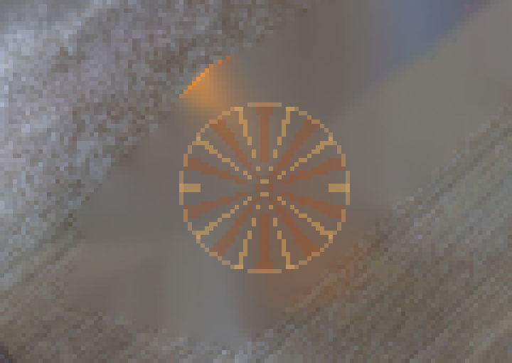
视觉工具实际返回图片 33
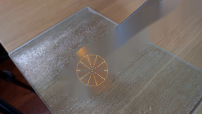
视觉工具实际返回图片 34
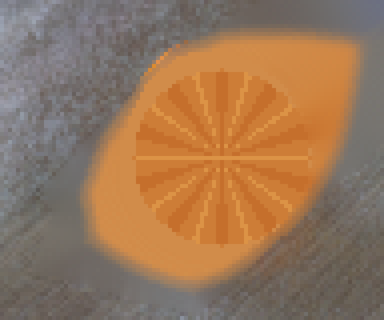
视觉工具实际返回图片 35

视觉工具实际返回图片 36
视觉工具实际返回图片 37
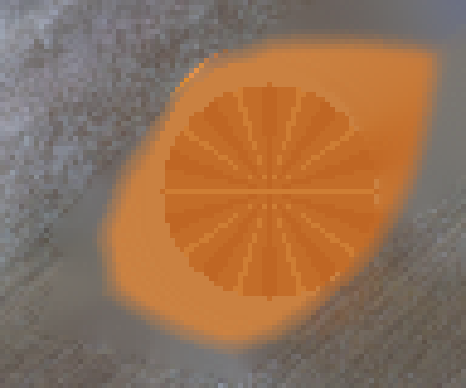
视觉工具实际返回图片 38
视觉工具实际返回图片 39
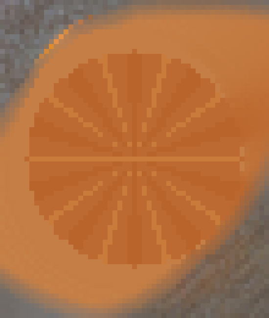
视觉工具实际返回图片 40
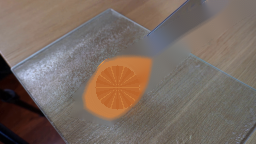
视觉工具实际返回图片 41
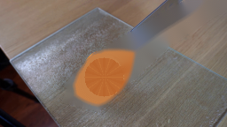
视觉工具实际返回图片 42
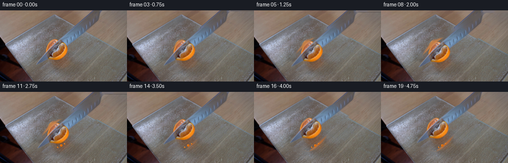
视觉工具实际返回图片 43
视觉工具实际返回图片 44
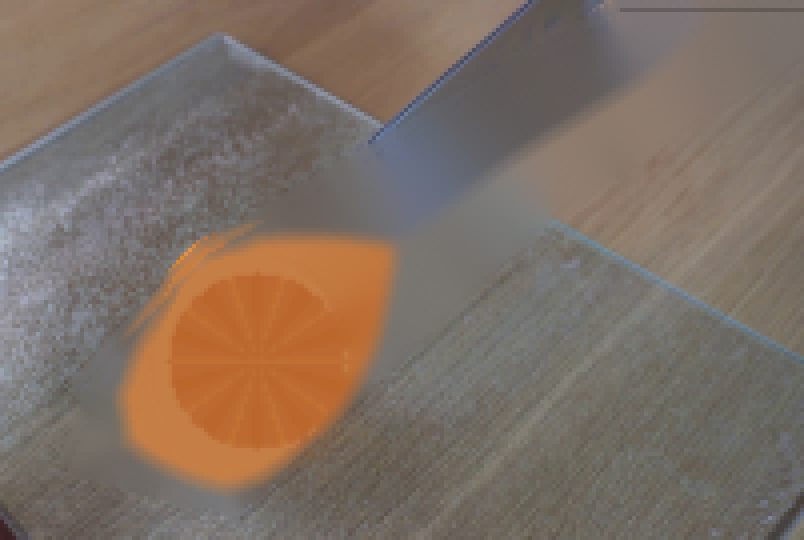
视觉工具实际返回图片 45
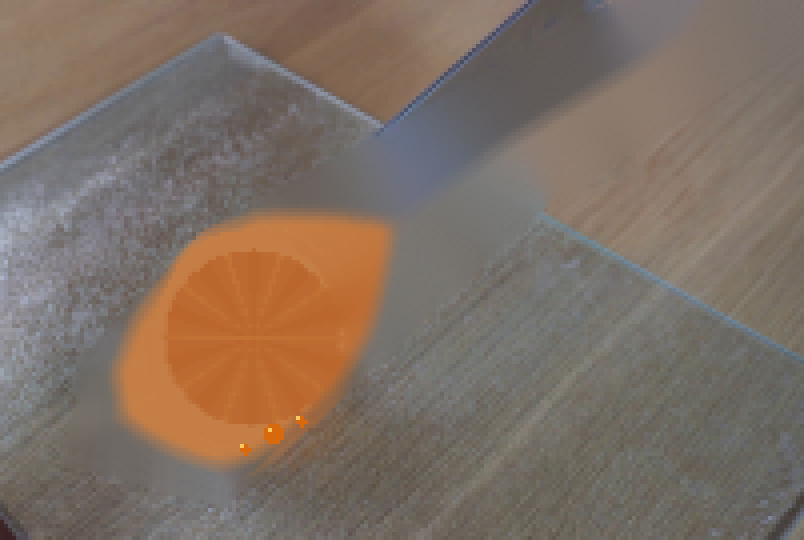
视觉工具实际返回图片 46
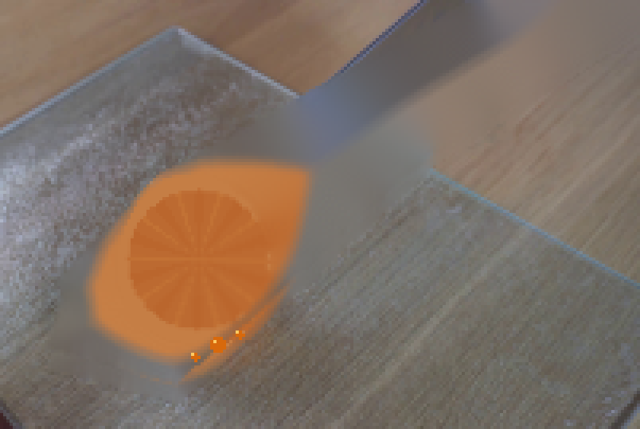
视觉工具实际返回图片 47
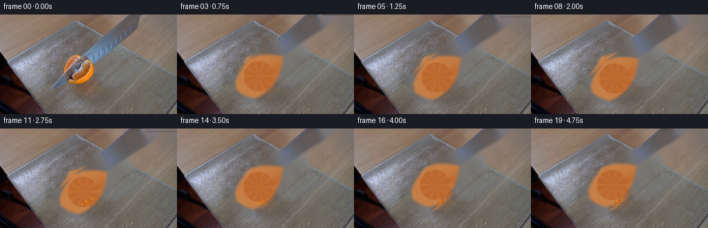
视觉工具实际返回图片 48

视觉工具实际返回图片 49
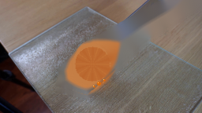
视觉工具实际返回图片 50
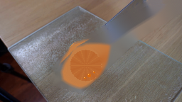
视觉工具实际返回图片 51

视觉工具实际返回图片 52
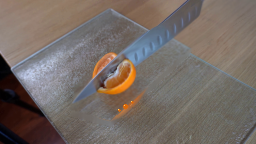
视觉工具实际返回图片 53
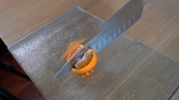
视觉工具实际返回图片 54
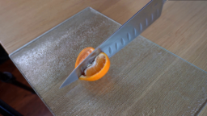
保存候选 4 份；完成命令 76 次；可验证图片返回 54 张。原始 API 响应与完整日志保留在本地。